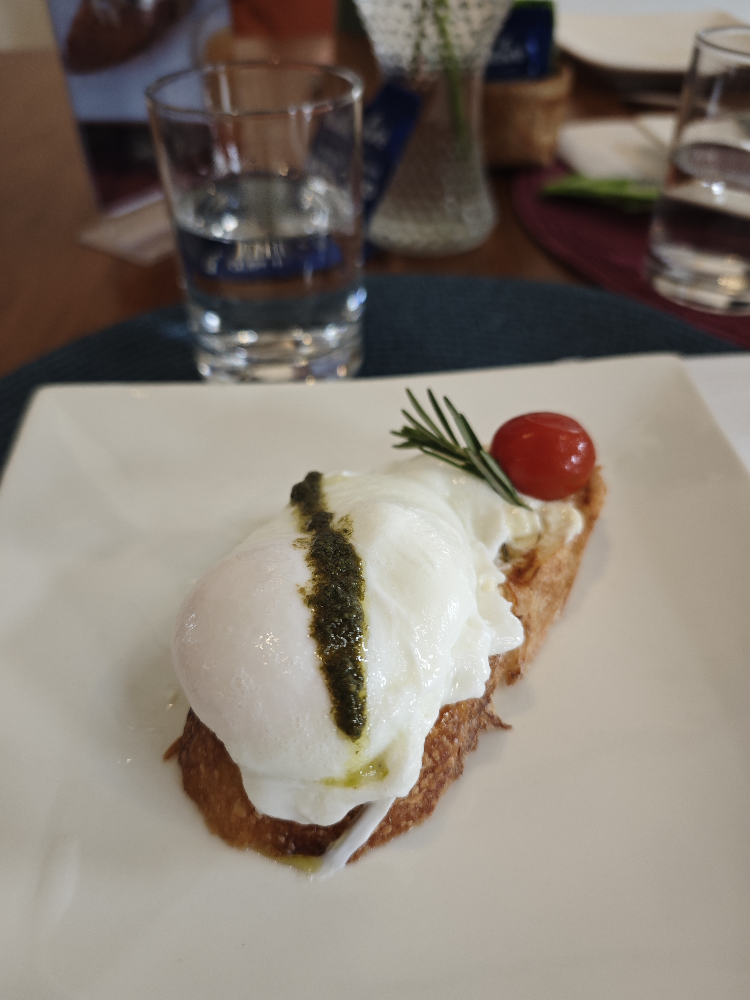
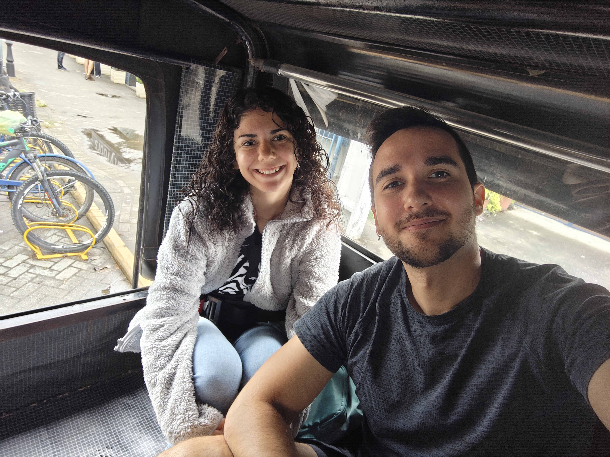
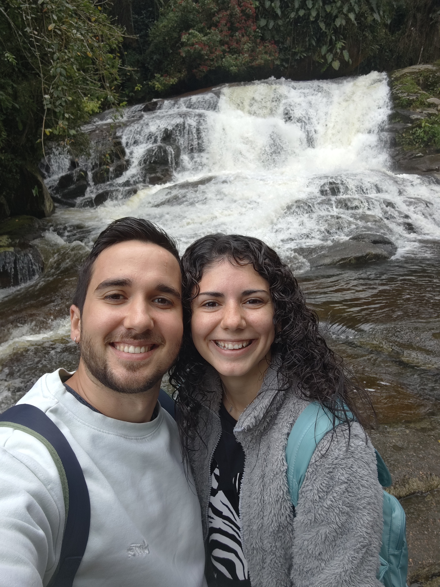
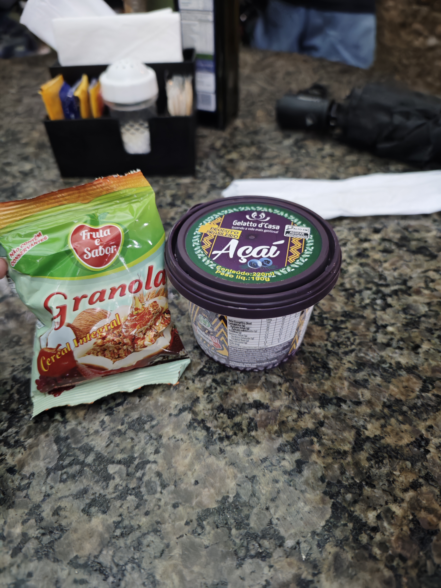
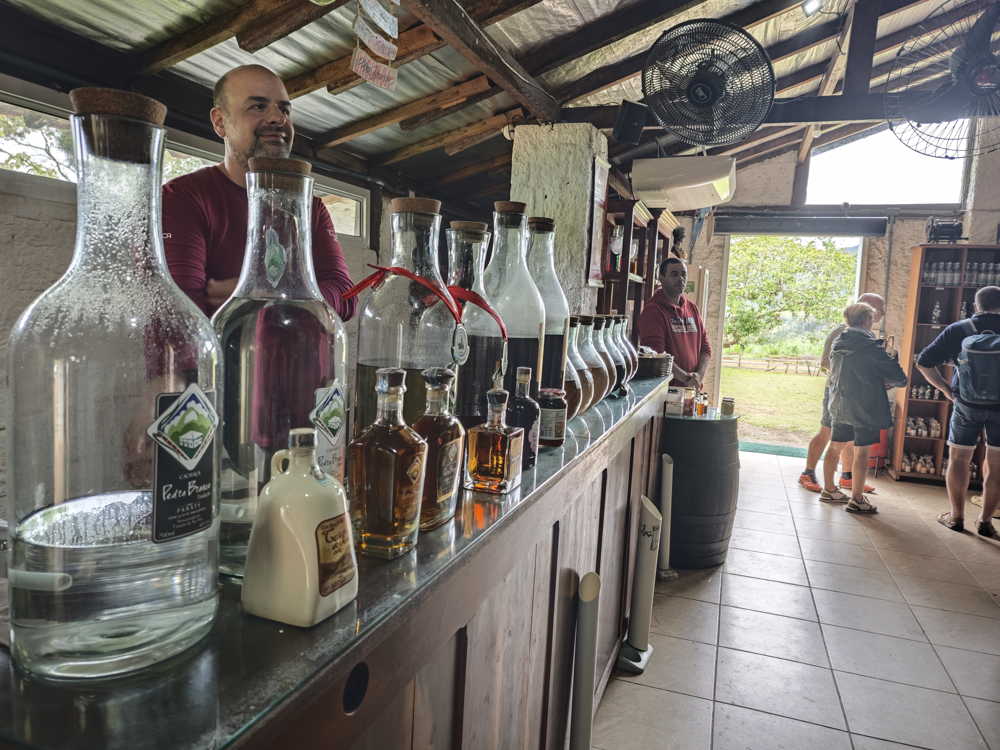
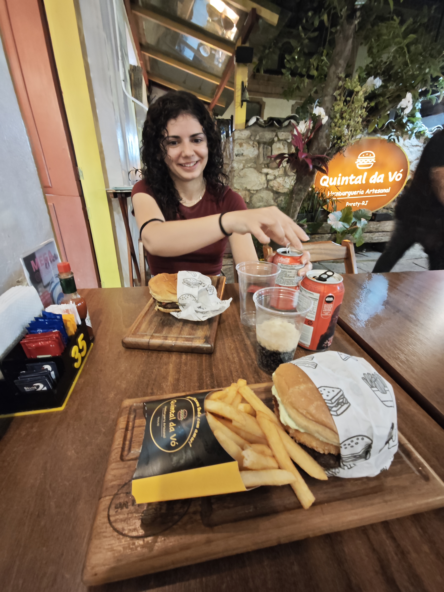

Este día desayunamos mejor ya que nos dimos cuenta de que se incluían desayunos calientes. María se pidió un huevo frito con bacon, y yo me pedí una tostada de queso con huevo pochado y pesto. Muy rica. Este día también vinieron los monos titis, que se habían convertido en nuestros acompañantes diarios en los desayunos de Paraty.
🥚 Desayuno Final en Paraty
🐵 Los Titis de Paraty
Los monos titis se convirtieron en los personajes principales de nuestros días en Paraty. Pequeños, ágiles y traviesos, eran el recordatorio perfecto de que estábamos en plena naturaleza tropical. Cada desayuno era una oportunidad de verlos juguetear cerca de nuestras mesas.

🍳 El delicioso desayuno en Paraty
🚙 Excursión en Jeep: Cascadas y Naturaleza
Luego nos vinieron a buscar, como de costumbre allí, antes de hora. Fuimos a la agencia de tours a esperar. Hoy teníamos la excursión en jeep, nos llevaron a ver unas cascadas en las que podíamos meternos en el agua, pero no llevamos bañador y además hacía bastante frío. Allí María le dio de comer a unos titis un platanito, fue un momento dulce de conexión con la fauna.
En esta excursión sí que tuvimos un guía que hablaba inglés y nos explicaba todo. Era bastante majo, a diferencia de la excursión anterior. Fue un alivio poder entender las explicaciones y aprender sobre la zona.
🚙 Excursión en Jeep
Destino: Cascadas de Paraty
Guía: Hablaba inglés (¡alivio!)
Actividad especial: María alimentando a los titis
Clima: Frío, no ideal para bañarse

🚙 La camioneta que nos llevó en la excursión



🍽️ Almuerzo en Buffet por Kilo
En la excursión fuimos a comer a un buffet por kilo en el que comimos bastante bien. Preguntamos si estaba incluido en la excursión y esta vez no lo estaba (lección aprendida del día anterior). Después nos fuimos al hotel rápido porque me dolía la barriga y nos bajamos al jacuzzi/piscina.
🥃 Visita a la Fábrica de Cachaças
Después de las cascadas y de comer, fuimos a visitar una pequeña fábrica local de cachaças. Nos mostraron el proceso de elaboración paso a paso: desde la molienda de la caña hasta la destilación y el reposo en barricas. Fue muy interesante ver el oficio tradicional en acción.
Al final de la visita nos ofrecieron una pequeña cata de diferentes tipos de cachaça, con explicaciones sobre sus matices y usos en cócteles. El guía que nos acompañó era argentino y bastante majo, así que la visita fue amena y didáctica.
🥃 Datos de la Visita
Actividad: Demostración de producción y cata
Guía: Argentino, simpático y muy explicativo
Incluye: Explicación del proceso, destilación y degustación

🥃 Demostración y cata en la fábrica de cachaças
🛁 Descubrimiento: Jacuzzi Requiere Reserva
Nos enteramos de que se tenía que reservar el jacuzzi en recepción, porque María se metió en el jacuzzi y le llamaron la atención. Fue una sorpresa, pero al menos ahora lo sabíamos. Fuimos a la sauna un rato y luego nos subimos a la ducha.
📋 Las Reglas No Escritas del Hotel
Paraty tiene sus propios sistemas y reglas que no siempre están claramente comunicadas. El jacuzzi reservado fue uno de esos detalles que aprendimos por la vía difícil, pero que al final hacía sentido para gestionar la capacidad.
🍔 Cena Final y Preparativos
Después cenamos en una hamburguesería que estuvo todo muy bueno. Fue una forma agradable de terminar nuestro tiempo en Paraty. Después nos preparamos la maleta antes de dormirnos para tenerlo bien preparado para el día siguiente, sabiendo que nos iríamos temprano.

🍔 Cena en la hamburguesería de Paraty
"El penúltimo día de un viaje es especial: sabes que es el final, así que valoras cada momento. Jeeps,
cascadas, titis pequeños y hamburguesas nunca vuelven a saber igual." 🚙🌿